This page shows how to add a new Eventing Function and briefly explores the Eventing Lifecycle.

This is a quick introduction to Eventing via creating a simple Eventing Function and subsequently exercising the Eventing Function’s operations across its typical lifecycle. For a deeper insight refer to the more detailed Eventing Examples.
Prerequisites:
In order to show the basic life cycle of an Eventing Function, we need a Function Scope (a RBAC grouping), a Listen To Location (a source keyspace) and a separate Eventing Storage keyspace. You must have an Eventing storage keyspace, which should be typically 100% resident, and the collection is to be used solely by the Eventing Service.
For the Function Scope or RBAC grouping, we will use the *.*, assuming you have the role of either "Full Admin" or "Eventing Full Admin". For standard or non-privileged users refer to Eventing Role-Based Access Control.
For the Listen To Location or source keyspace we will use the beer-sample._default._default sample document set.
If you don’t already have the sample document set beer-sample (it should have a scope of _default and a collection of _default) listed in the Couchbase Web Console > Buckets page you can load this sample data set as follows:
-
Access the Couchbase Web Console > Settings page
-
Select the Sample Buckets in the upper right banner.
-
Check beer-sample checkbox.
-
Click Load Sample Data.
For the Eventing Storage keyspace we need to create one if missing as follows:
-
Access the Couchbase Web Console > Buckets page
-
Select the Add Bucket in the upper right banner.
-
In the dialog set the "Name" of the bucket to rr100 and set "Memory Quota" to 100 MiB.
-
Click Add Bucket.
At this point we could use the Eventing Storage keyspace of rr100._default._default, for all Eventing Functions but we might want to split this up by a logical grouping (or alternatively by tenants):
-
Select Scopes & Collections at the right of the new bucket information line.
-
Select the Add Scope in the upper right banner.
-
In the dialog set the "Name" of the Scope to eventing.
-
Click Save.
-
Select Add Collection at the right of the new scope information line.
-
Click Save.
If we return to the Couchbase Web Console > Buckets page you should see two (2) buckets.
If we now select Scopes & Collections at the right of the rr100 bucket information line, then expand eventing you should see the metadata collection.
Create an Eventing Function:
-
From the Couchbase Web Console > Eventing page, click ADD FUNCTION.
An empty ADD FUNCTION dialog is shown:
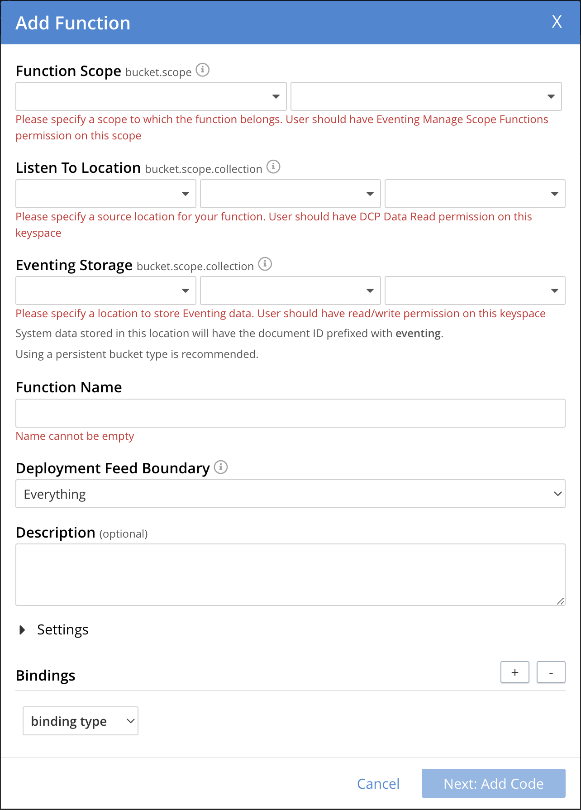The ADD FUNCTION dialog enables the developer to provide the following information:
Table 1. Add a Function Dialog Elements
Description
Function Scope
Function Scope (RBAC grouping)
A bucket.scope combination used for identifying functions belonging to the same group.
The "Eventing Full Admin" role and also the "Full Admin" role can manage all Eventing Functions. Only these two privileged roles can set the bucket.scope to *.* and already have all the required RBAC privileges to both create and manage Eventing Functions.
Typically, you should set Function Scope to the bucket.scope that holds the collection that is the source of your mutations.
For complete details on how to set up the "Function Scope" and required RBAC privileges for standard or non-privileged users, refer to Eventing Role-Based Access Control and Manage Users, Groups, and Roles
Listen To Location (the source keyspace)
The name of a collection currently defined on the cluster. As of 7.1.1, Eventing Functions can listen to multiple collections via a wildcard of
*for the scope and/or the collection.For complete details on how to set up your keyspaces refer to creating buckets and creating scopes and collections.
Eventing Storage (the Eventing metadata keyspace)
The name of a collection currently defined on the cluster. The Eventing Storage (or Metadata) collection, stores artifacts (or configuration documents) for your Function. A common Eventing Storage collection can be shared across all Eventing Functions for the same tenant.
For complete details on how to set up your keyspaces refer to creating buckets and creating scopes and collections.
Function Name
A name, for the Function you are creating. All Eventing Functions must have a unique name in a Couchbase cluster.
Deployment Feed Boundary
Using the Feed Boundary drop down, you can either set an Eventing Function to deploy for all data mutations available in the cluster (Everything) or choose to deploy the Eventing Function to process only future data mutations, post deployment (From now). The Feed Boundary is a persistent setting in the Function’s definition and can only be set or altered when a Function is created, undeployed or paused.
Description
The Description is an optional text that can be added to the Function, typically to describe the purpose of the particular business logic. This is optional.
Settings
The available settings (by default hidden within a collapsible panel) for complete details refer to Terminologies - Function Settings:
-
System Log Level: Determines the granularity at which messages are logged to the common system log messages across all Eventing Functions. The available choices are:
Info(the default),Error,Debug,Warning, andTrace. Leave this alone unless asked by support to change it. -
Application log location The directory path to the log file for the application or the Function specific log messages named [function_name].log. The Function designer uses log() statements to write to this file in addition it will also record some Function specific system level errors. In the UI when "Log" is selected these files are combined across all Eventing nodes and displayed. This path is set at node initialization.
-
SQL++ Consistency: The default consistency level of SQL++ statements in the Eventing Function. This controls the consistency level for SQL++ statements, but can be set on a per statement basis. The valid values are
None(the default) andRequest. -
Workers: Workers the number of worker processes to be started for the Eventing Function. The minimum value is 1 (the default) and the recommended maximum is 64.
-
Language compatibility: The language version of the Eventing Function for backward compatibility. If the semantics of a language construct change in any given release the “Language compatibility” setting will ensure an older Eventing Function will continue to see the runtime behavior that existed at the time it was authored, until such behavior is deprecated and removed. Note 6.0.0, 6.5.0, and 6.6.2 (the default) are the only currently defined versions.
-
Script Timeout: Script Timeout provides a timeout option to terminate a non-responsive Function. The entry points into the Eventing Function, e.g. OnUpdate and OnDelete, processing for each mutation must complete from start to finish prior to this specified timeout duration. The default is 60 seconds. In addition an Timer callback must also complete within this period.
-
Timer Context Max Size: Timer Context Max Size limits the size of the context for any Timer created by the Function. Eventing Timers can store and access a context which can be any JSON document, the context is used to store state when the timer is created and retrieve state when the timer fires. By default the size is 1024 bytes, but this can be adjusted on a per Function basis.
Bindings
A binding is a construct that allows separating environment specific variables (example: bucket names, external endpoint URLs, constants) from the Eventing Function’s JavaScript source code. Currently Eventing Functions support the following binding types:
-
Bucket Bindings: to access the Data Service or KV.
-
URL Bindings: to communicate externally via cURL.
-
Constant Bindings: to pass global settings/constants into the function.
An Eventing Function can have no bindings, just one binding, or several bindings. For more information on Bindings, refer to Terminologies - Bindings.
-
-
In the ADD FUNCTION dialog, configure the following information:
-
For the Function Scope drop-downs, select * for bucket, and * (we assume you have the role of either "Full Admin" or "Eventing Full Admin" otherwise you will need RBAC set up for your user to access the required resources).
-
For the Listen To Location drop-downs, select beer-sample for bucket, _default for scope, and _default for collection.
-
For the Eventing Storage drop-downs, select rr100 for bucket, eventing for scope, and metadata for collection.
-
Enter my_evt_function as the name of the Function you are creating in the Function Name text-box.
-
[Optional Step] Enter text A simple Eventing Function only prints IDs, in the Description text-box.
-
For the Settings option, use the default values, feel free to expand this section and inspect.
-
For the Bindings option, don’t add any bindings (we will merely be logging messages).
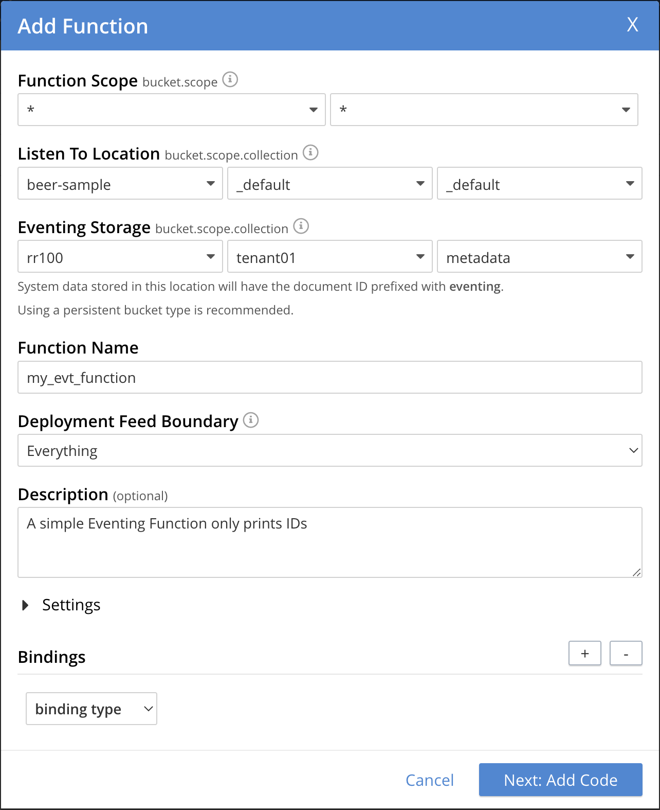Note, we left the Settings alone, however if you expanded the collapsible Settings control you can see the defaults that the Function will use:
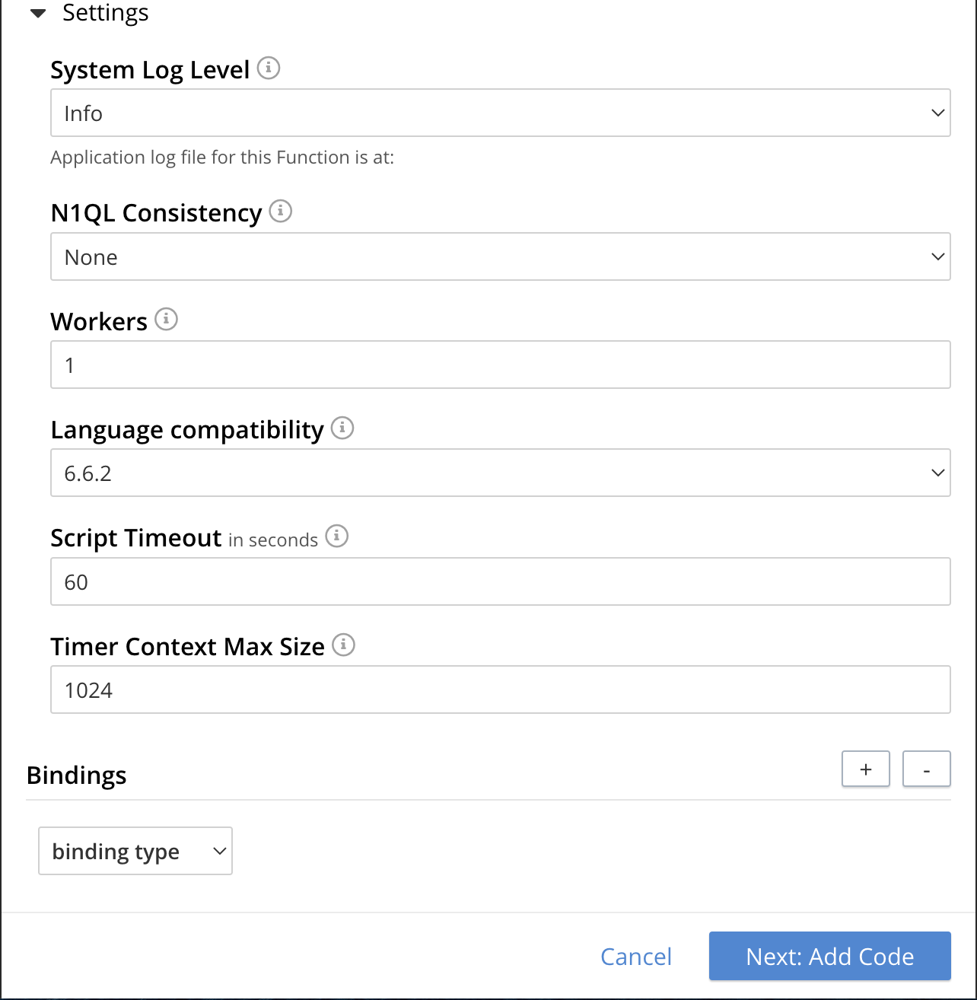
-
-
After providing all the required information in the ADD FUNCTION dialog, click Next: Add Code. The my_evt_function dialog appears.
-
The my_evt_function dialog initially contains a placeholder code block. You will accept the default for your my_evt_function code.
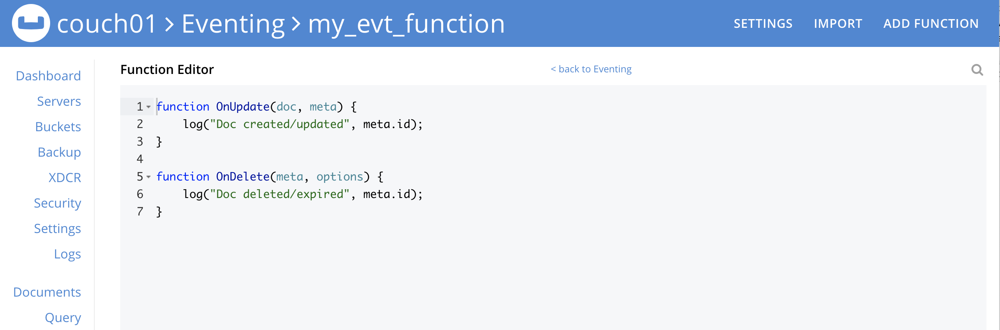 -
You will need to click Save and Return if you modified the JavaScript source.
-
To return to the Eventing screen, click the '< back to Eventing' link (above the editor) or just click the Eventing tab.
-
Exercise the Eventing Lifecycle:
-
Click on the Function name.
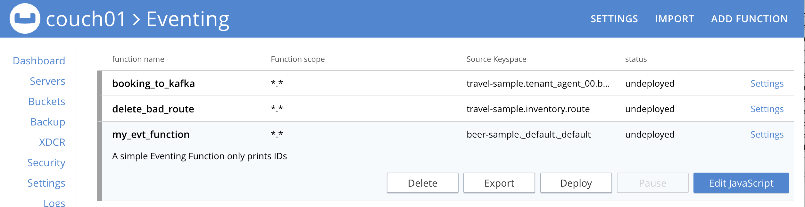Additional controls are now displayed. The controls are:
-
Delete: Deletes the Eventing Function from the system.
-
Export: Exports the Eventing Function as a JSON document.
-
Deploy: Deploys the Eventing Function, making it active across the cluster.
-
Pause: Pauses the Eventing Function, making it paused across the cluster (only allowed if the Function is Deployed). If a Function is paused this button will be renamed Resume.
-
Edit JavaScript: Allows edits to be made on the Eventing Function, in an edit dialog (only allowed when Paused or Undeployed). When deployed this button is renamed View JavaScript.
-
-
From the Eventing screen, click Deploy.
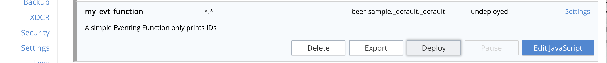-
In the Confirm Deploy Function dialog, note that Everything is the preferred Feed boundary.
The Feed Boundary determines whether documents previously in existence need to be included in the Function’s activities: the options are Everything and From now. The Everything option invokes a Function on all mutations available in the cluster from the Listen To Location keyspace. The From now option invokes a Function during future instances of data mutation, post Function deployment or new changes to the Listen To Location keyspace. The preferred Deployment Feed Boundary for the function can be changed under the function level settings when the Function is undeployed or paused.
-
Click Deploy Function.
-
-
While the Eventing function is bootstrapping it will display a status of "deploying…" in the UI. Once the bootstrapping is complete the defined Function’s JavaScript code is executed on all existing documents and then on subsequent mutations. This function will only perform logging operations.
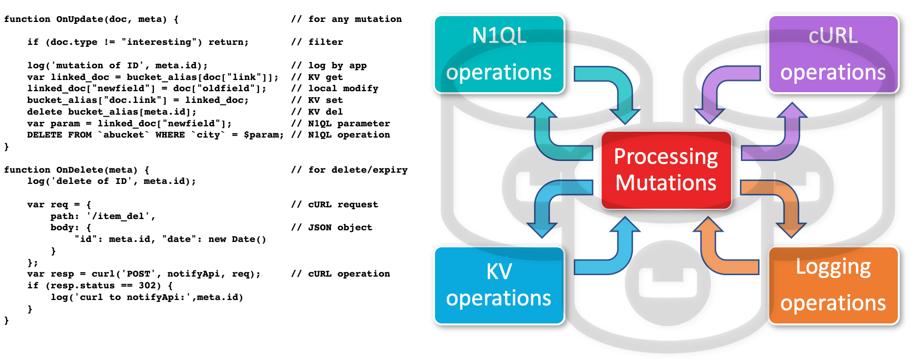The deployment process typically takes about 15 seconds. Once the Eventing Function is fully deployed its status will change from deploying… to a status of deployed. At this point the Eventing service will quickly process all of the 7,303 items in the collection because the Feed boundary was set to Everything in the Function’s settings. Finally the Function will await any new mutations and immediately process them in real-time as they occur.
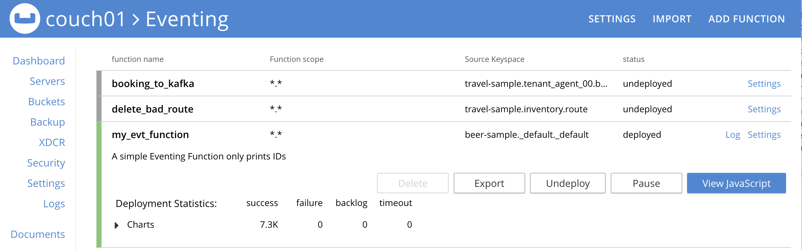Since the example only has a single log(….) statement in the OnUpdate handler (or entry point) it will merely list items in the collection 'beer-sample', i.e. 7,303 documents.
You should see the success count at 7,303 in the Function’s basic statistics.
-
Verify that the deployment and processing actually worked by clicking the Log link that appeared after you the Eventing Function reached a status of deployed. The Log link appears in the right hand side of the Function’s controls.
-
A dialog showing the Function Log - my_evt_function will appear with the most recent logging information (in reverse order with the most recent lines first).
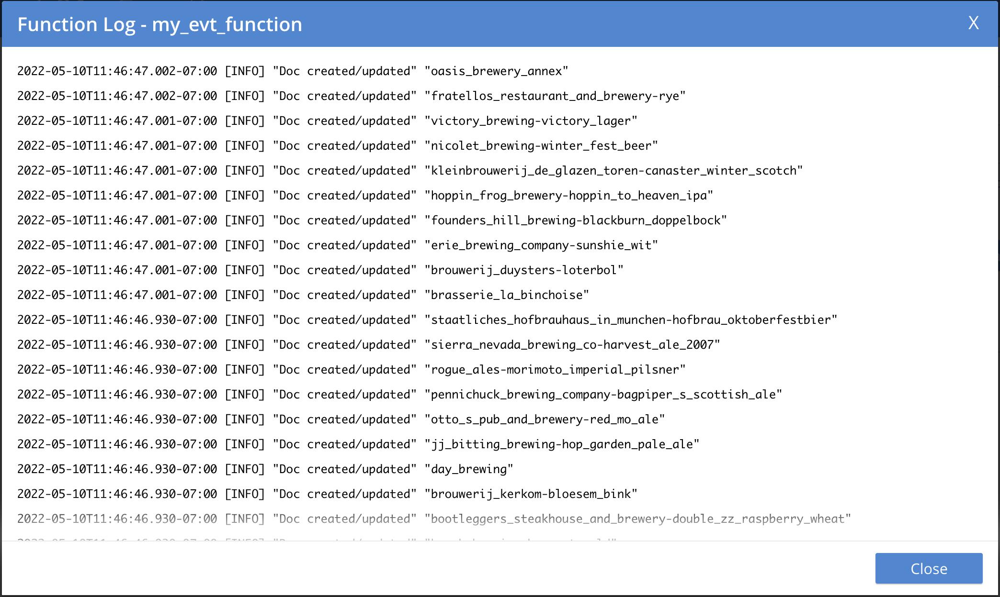 -
Click Close.
-
-
To pause a Function (you can then edit and update the function without missing a mutation)
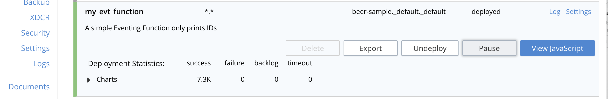-
Click Pause.
-
In the Confirm Pause Function dialog
-
Click Pause Function.
-
-
The Eventing function will now create a checkpoint of its progress and pause.
-
Wait for the "paused" state.
-
-
To resume a function that has been paused
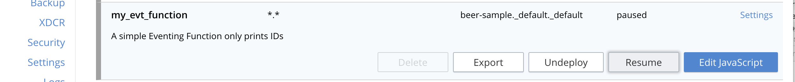-
Click Resume.
-
In the Confirm Resume Function dialog
-
Click Resume Function.
-
-
The Eventing function will now resume from the previously created checkpoint (no mutations will be missed).
-
-
To undeploy the Eventing Function my_evt_function
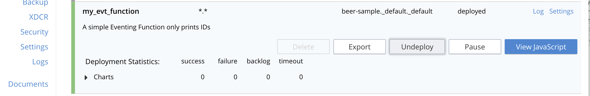-
Click Undeploy.
-
In the Confirm Undeploy Function dialog
-
Click Undeploy Function.
-
-
The Eventing function will now undeploy.
-
Wait for the "undeployed" state.
-
-
To delete the Eventing Function my_evt_function
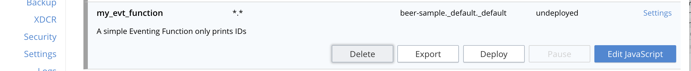-
Click Delete.
-
In the Confirm Delete Function dialog
-
Click Delete Function.
-
-
| The Eventing Function lifecycle operations (deploying, undeploying, pausing, resuming, and deleting operations) and the Eventing rebalance operation are mutually exclusive. The Eventing rebalance operation fails when an Eventing Function lifecycle operation is currently in progress. Likewise, when the Eventing rebalance operation is in progress, you cannot perform an Eventing Function lifecycle operation. |